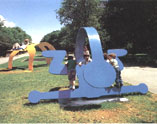

呂清夫 撰文

只要你喜歡什麼都可以，這可以說是後現代的特徵之一，而後現代的關鍵則在於資訊時代的來臨。而當西方人從一九五五年左右進入資訊時代以後，當代藝術也從一九六○年左右進入了新的紀元。這種造形藝術如以近代的眼光去看是難以理解的，因為那不但在創作上會導致望文生義，在理論上也要陷於隔靴搔癢。所以如要研究當代藝術，便應從資訊時代的背景下手，這因為資訊時代的許多特質，都在在反映於當代藝術之上。在此，我們要先引證一些常識性的資料，來強調資訊時代的特質；進而探討當代藝術與這種特質的必然關係。1.時間的長流是否等於於時鐘和日曆上的記載？資訊理論家麥克魯漢曾說，人類從工業時代步入資訊時代的改變是三百六十度的，那正如同人類從游牧時期步入農耕時期。至於導致 這種改變的最大關鍵當在於新科技的革命，這時人類開始批判工業時代的人生觀，企圖推翻過去三百年來的偏見，有人說，這是STR （科技革命）時代，也有人說是後工業時代，麥克魯漢則說，這是地球村時代，「第三波」的作者托佛勒又說是超工業時代。至於太空時代、電子時代諸名詞更與資訊時代一詞同其普遍。根據托佛勒的說法，資訊時代屬於人類文明發展史上的第三波，至若開始於三百年前的工業時代則屬於第二波。這兩個時代形同而實異，從表面上看，都是科技發展令人咋舌的紛代，但本質上兩者還是完全不同，即使連基本的時空觀念都不一樣。托佛勒曾經指出，在工業時代，自牛頓以降，都假定時間是一條直線，由過去經過現在通向末來，並認為時間在宇宙各處都是絕對的，規律的，獨立於質量和空間之外，同時每一瞬間，每一時段都和下一刻相等。但是進入資訊時代以後，科學家則冷靜地告訴我們，時間的長流不同於時鐘和日曆上的記載，它並不是穩定地一往直前，因為測量時間的位置不同，就會得到不同的結果。托佛勒說，在太空所謂的「黑洞」周圍，一瞬可能等於地球上的永恒，如果人類派一艘太空船去探測一個「黑洞」，這艘太空船可能要讓大家等上一百萬年，才會到達目的地。這因為「黑洞」周圍重力失調，太空船上的時鐘祇會移動幾分、甚至幾秒。這種紛間觀念早在本世紀初，便由愛因斯坦加以證明，他指出，時間可以壓縮，亦可以延伸。愛因斯坦曾舉出一個著名的例子，他說當一個人坐在疾駛的火車之中時，即使有兩道閃電同時迸放於軌道的兩端，但是車中人的感覺是，靠火車前端那一道閃電首先出現，這因為火車把他帶離後端那一道閃電，並接近前端那一道閃電，故一者比另一者先出現於眼底。因之愛因斯坦說，時間不是絕對的，而是相對的，須視觀察者的速度而決定。對於工業時代的時間被視同直線的觀念，托佛勒稱之為「直線時間」。但是在非工業時代的社會，如印度人、馬牙人則認為時間並非直線，而是圓圈，是重復的、輪迴的。威廉巴拉曾提到，印度的思想使人「立刻為那廣大的空間景象、無窮的時間、層層的世界所震驚……接著我們發現，這些就是現代天文學上所說的空間和時間。」托佛勒則認為，圓形的時間觀念來自印度的「劫」，一劫四十億年。至於中國人怎麼想呢？早期道家的哲人應傾向於圓形的時間觀念。說來工業時代的「直線時間」其實近乎麥克魯漢的「直線思考」，後者在麥氏看來，乃是西方文藝復興的遺產，因為自從谷騰堡（J.G.Gutenberg,一四○○～六八）發明活字媒體以來，西方人受了「熟讀」習慣的影響，思考是走直線的。但是等到電子媒體出現以後，人們便排斥了直線思考，改取馬賽克式的集錦路線，因之他說，現代人看報是漫不經心的、跳著看的，在這種心態之下出現的便是托佛勒所謂的「彈片文化」（圖3 ）。直線思考是一種秩序井然的路線，它顯示在造形藝術上的便是西式寫實藝術，自文藝復興以後到新古典主義為止，均屬於這個系統。至於集錦路線或彈片文化則是不按牌理出牌的，現代藝術之所以顯得如彈片一般，便是來自這種全新的時空觀念。由於藝術家常走在時代的尖端，所以當資訊時代未出現以前，在二十世紀初期便出現了野獸派、立體派之類的新藝術，這正如同愛因斯坦在本世紀初便提出了新的理論。等到資訊時代來臨，新藝術便如虎添翼地被推到了極限。麥克魯漢便說：「藝術是所謂的『危險預警裝置』，託它之福，我們才可及早發現社會的、精神的危險徵候，並可以從容不迫地準備應付。從這個角度看來，藝術已不只是一般所謂的自我表現。藝術如果是第二次大戰初期的雷達上所謂的『預警裝』，那麼藝術便不僅是媒體的研究，同時也深切關係著如何控制媒體的問題。」（圖1 ）2.誰說整個地球是個村落？其次，單就空間而言，在工業時代也是走直線的，那時大家不僅把船隻安排在直線的航程上，而且還建造出平行直線的鐵軌，至於新都市的計劃更出現秩序井然的格子狀。這一切不用說，都為了講究效率，同時也導致了人口的向都市集中。但是在資訊時代就不一樣了，這時由於電腦、通訊技術的進步，節省了很多人力物力，由於各種電子機器的出現，將來繁重的業務不再需要秘書，於是出現了托佛勒所謂的「無紙的辦公室」、或「秘書宣告失業」的時代。不僅此也，人 們還可以把許多上班的工作躲在電子住宅去做，於是通勤之苦將為之消失，人口集中亦為之解除，空間觀念由是為之一變。至於人們若有出門，不是為了工作，而是為了旅遊。同時人們還可以徹底做到「秀才不出門，能知天下事」。因為衛星影像與紅外線會把整個都市鉅細靡遺地呈現在吾人面前。科學家還指出，不出十年之內，衛星更可以把一個都市（或一個國家）的活動地圖展現給我們看，讓我們臨場觀賞其中進行的活動。這時地圖已不是靜態的展示，而是活動的Ｘ光照片。我們將由此獲致動態的、相對的及整體的空間觀念，並充份體驗麥克魯漢多年以前所揭櫫的，整個地球是個村落──地球村，而地球村乃是麥氏創用的名詞。麥氏曾說，電視的實況轉播或衛星轉播使大家有天涯「共此時」或「若比鄰」的感覺，在此，古人所謂的四海一家已完全實現。但不管時間的大圓圈也好，或者空間的地球村也好，都使人對工業時代的一切產生懷疑和批判，大家已經發現，社會的「進步」不是走直線的，不是單行道的，而是盤根錯節的、多元性的。大家也不再把工業時代的細密分工放在心上，不再希望自己扮演一個螺絲釘似的角色，因為在資訊時代，這些東西都已發生不了作用。故托佛勒曾說，工業時代的產業如果說屬於笛卡爾派，如果產品都要先破裂成碎片，然後再重組起來的話，那麼資訊時代便屬於後笛卡爾派，或者屬於 整體主義。兩者的分別十分簡單，我們祇要看看兩個時代的手錶便可一目瞭然，工業時代的手錶一度是由幾百個活動零件組合而成，但資訊時代卻可以製造出更準確、更可靠而很少零件的手錶。在這個整體主義的時代中，就學術界而言，反對狹窄的過度專業化已是一種普遍的呼聲，例如生翠學家便極力反對把事情分成幾個部份，然後逐一解決，因為那是頭痛醫頭、腳痛醫腳的做法。托佛勒說，今天除非是博學的「通家」（不是專家）致力於研究自然的整體關係，否則過去的科技將會把人類帶向毀滅，對環境學家而言，過去的科技已被視為破壞人類自由及天然環境的凶神惡煞，「進步」一詞已成了骯髒的字眼。西方的年輕人也因此開始嚮往東方的宗教，他們在歌頌東方宗教之餘，不由得叫道，現代世界並沒有破裂成笛卡爾的碎片，它是一個「整體」，故學術界要求科際整合乃成了普遍的趨勢。在資訊時代裏，人類已為周遭的物體注入了智慧，這項革命性的進展關鍵就在於科技革命的產物──電腦。關於這點，托佛勒與麥克魯漢真是英雄所見略同，這因為電腦會增加我們對因果關係的認識，幫助我們把周遭不相關的資料，綜合成有意義的「整體」。至於麥克魯漢在論及這種整體主義時，更不忽略東方人的整體觀念。他說現代物理學家雖會注意莊子的思想，但如果是牛頓便不會如此，因為過去並沒有整體主義的概念。唯整體主義雖由麥克魯漢及托佛勒一再加以強調，但麥氏應該比托佛勒先走一步，因為麥氏的重要著作都比「第三波」早了十多年。3.孫子過橋就比祖父走路還多？麥克魯漢對當代藝術的重要性在於他揭櫫了電子時代的藝術及五感調和的文明，至於他的出發點則在排孛視覺掛帥的文化。當普普藝術出現以後，西方的普普藝術家幾乎人手一冊地拜讀他的那本名著「理解媒體：人類擴張的原理」（Understanding Media:The Extensions of Man, New York, 1964 ）。麥克魯漢又認為，由於上述的谷騰堡發明了活字印刷術，人類便一味依賴視覺去感受外界的刺激，使其他的感覺如觸、聽覺受到偏廢，大家都過著一種活字至上的精神生活，遂產生了哈姆雷特那種思維型的人物，這種人知行無法合一，或者乾脆知行分工。如是西方文化便開始重分析、重邏輯，要合理化、要效率化，這樣弄到後來，很自然地出現了機器，帶來了工業，進而形成了一股所謂征服自然的野心。這種局面之所以出現的思想背景不用說，乃是牛頓及笛卡兒的鋸械論之自然觀，亦即在他們看來，時間與空間都是可以計量的東西，於是時間與空間都被剝奪了宇宙論的意義。等到進入資訊時代以後，才使西方人掙脫了螺絲釘的人生觀，逃出了谷騰堡的活字監獄，五感分家、分工過細的時代已成過去，連資料的整理都走出了分類的窠臼，步入了整體像（pattern ）的新局。麥克魯漢說，這正是IBM 的基本原理。在工業時代，人們從事的是高度分工的「工作」（job ），在資訊時代，人們擔當的是整體發展性的「任務」（role），別矣！工業時代的機械生活及機械論的時空觀。在這個電子的時代中，電子迴路取代了過去的螺絲釘，資訊的傳達訴之於人類的五官，絕不侷限於視覺，因之，人類接受的資訊要比過去豐富得多。不僅此也，資訊上的硬體更是五花八門，電腦電視不說，其他如無線電傳真、衛星轉播、彩色影印、雷射構成的光纖、光纖構成的影像電話……都是，可謂包羅萬象。這些無奇不有的東西使得IBM 的一個主管不由得嘆道：「我的孩子早在小學一年級的時候，過橋就比他的祖父走路還多！」這當然不是指現代的小孩看過很多很多機器，而是說他們碰過太多太多的資訊。情況類似未上小學的「電視兒童」，竟然天文地理，無所不知。在資訊時代，由於光怪陸離的傳播資訊會衝擊人的全身，麥克魯漢於是說那是一種「馬殺雞」，他曾有一句名言：「訊息就是馬殺雞」（The message is the massage）。他說，在這種「馬殺雞」之下人們便要獲致五感的調和。他又說，這種時代的特色倒有點像原始時代，因為原始人絕不會使某種感官特別發達，凡是老天生給我們的感官，不論視覺、聽覺、嗅覺、觸覺、味覺等都要拚命去用它。故也有人說：「原子時代就是原始時代」。因為兩個時代的人都用全身去感 受外物或傳達意念，不偏重活字媒體的傳達。過去由於活字媒體攜帶方便，所以往往使人躲到自己的象牙塔中，各自為政，麥克魯漢於是認為，活字媒體嚴重地妨礙著人類的團結。至於資訊時代的電子媒體（如電視）由於經常處於「天涯共此時」，因之會隨時令人有「海外存知己」的感覺。4.九十秒的新聞、中間插入三十秒的廣告，半首歌……在詹明信來說，他曾借用了康德的措詞說，現代主義具現了崇高之感，而後現代主義則具現美的感情，若現代的建築是要改造都市，那麼後現代的建築則在創造商品化的都市（圖6,7,8 ），以符合消費時代的需要，因之顯得五顏六色，東拼西湊。其次，現代主義的繪畫可以由幾種作品為代表，其一是梵谷畫的「農鞋」，梵谷描寫農夫的生活並不直接畫農夫，卻改用農鞋來表現農人生活的艱苦，詹明信說這是一種轉喻，如果直接描寫即屬寫實主義。其二是畢卡索的「格爾尼卡」，其中種種變形與重組的手法，使作品象徵的內容具有普遍的表現性，而不像寫實主義的直接描寫，只能記錄一個他方的災難。而不管怎樣，這些作品都有一個共同的特徵，那就是「焦慮」，這是現代主義時期的病徵（ 圖9 ）。至於後現代主義時期的病徵則是「碎散」，類似麥克魯漢的馬賽克式思考或托佛勒所謂的彈片文化。後二者把個中的原因歸結到電子媒體那種「九十秒的新聞、中間插入三十秒的廣告，半首歌、一則頭條新聞、一段卡通……」的彈片文化，但是觀眾仍善於把搜集到的片斷資料組織成自己的模式。至於詹明信則把這種「碎散」歸因於吸毒帶來的體驗，故被視為一種病徵，他所視為典型的作品則是沃霍爾（A.Warhol ）的「瑪麗蓮‧夢露像」（註14, 圖10）。大凡具有遠見的當代學者都會注意到媒體的問題，詹明信也不例外，只是他從另一個角度來看媒體。吾人若把他的媒體觀作個整理，那麼他的媒體當可分成兩大類，其一不妨稱之為疏遠的媒體，如報紙、電影之類，看報的時候沒什麼真實感，看電影或記錄片的時候，則要到公共場所才能看到，顯得不夠親切，頗有距離。反之，其二是親密的媒體，如收音機、電視之類，它們之所以顯得親密，主要因為它們都確實走入了家庭，那些聲音和影像也都可以說是私有的，並可以錄音錄影下來。也因此，當年的希特勒和羅斯福，即靠收音機創造了奇特的親密感，並且因之鞏固了統治權。後來的艾森豪與甘迺迪則又依賴電視，打破了與人民的距離感，與個人的神秘感。可能也因為如此，國內過去對於媒體的管制亦以電視最嚴，其次是收音機，再其次才是報紙，只有報紙較能容許大放厥詞。但是也因為親密媒體的真實感，很容易讓人信以為真，把影像誤視為現實，從而打破了上述的距離感，詹明信於是很悲觀地認為，影像時常很隱密地感染毒化了現實。5.只要你喜歡什麼都可以是藝術在現代主義和後現代主義之間，還可以從各種角度來加以區分。現代主義者像格林堡（C.Greenberg ）、佛萊德（M. Fried），曾用一種或可稱之為減法的方式來界定現代主義，亦即把不是現代主義的雜質一一除掉，最後剩下即為純粹屬於現代主義的內容，亦即用一種「自我純化」來界定現代主義。此事正如萊因哈特（A. Reinhardt）所說：「關於藝術，很重要的一點是：它是一種特定的事物。藝術是藝術之所以為藝術的事物，而其他的事物是其他事物。藝術之所以為藝術（art as art）是除了藝術別無其他。藝術不是非藝術的事物。」但是後現代主義則在它的屬性和它所排斥的東西之間，強調了深度的關聯性。亦即其中含有相當份量的雜質，非藝術也是藝術。文藝史家柯諾（S. Connor）便指出，後現代主義有時充滿「戲劇風格」 (theatricality)，例如普普藝術、觀念藝術、表演身體藝術（圖11 ）屬之；有時它又走回受人懷疑的具象風格；有時更要反對現代主義的形式主義美學。不過更常見的是純粹性與雜質的重疊或混合，使兩者唇齒相依。說得簡單一點，現代主義多少是排外的，而後現代主義則是針對排外而表現出高度的懷疑。所以佛克斯（H.Fox ）也說：「現代主義的藝術在等級上是現代的，談等級則排斥了過去美學的、倫理學的、及道德的更大規範。」而後現代主義相對的，其特徵在於「藝術家和觀眾願意接受共同的、永恆的趣味這一主題，並願意承認所有藝術的作用。」他並覺得在一九六○年代的「最低限藝術」中，看到現代主義者所需的自我純化之邏輯終點。再從消極的角度看，現代主義和後現代主義都各有自己的懷疑論，如果現代主義的懷疑論是針對模仿論（對大自然的模仿），那麼，後現代主義的懷疑論針對的是形式論、表現論、模仿論及其他可能假定的藝術觀念。在二十世紀後期，現代主義的形式論或表現論對於曾經「用藝術去探查藝術」的前衛藝術家（也是後現代主義者）而言，已經不感興趣。至於把現代主義和後現代主義劃分得最仔細的應推哈山（I. Hassan），他說：「現代主義像它的祖先法國象徵主義一樣，比較穩定、超然，而又有點僧侶的味道，甚至它的實驗在今天看來，仍然是莊嚴堂皇，氣派十足的；……如果現代主義多呈現僧侶的、從屬的、和形式論的面貌，則後現代主義在對比之下將顯得玩笑似的，並列式的以及解構論的，這將使我們大吃一驚！」現代與後現代的劃分在時間上未必是絕對的，重要的還在於精神的層面，因之，有學者提到：「『現代』不再是一種時間範疇上的概念，而是一種文化學的詞彙，任何對『現代』、『後現代』的反省與沈思都要扣緊這個特徵，才可能有清楚而相應的回答。」所以，現代主義的真義在於啟蒙運動及抗拒宰制，而後現代主義則是在反省這個進步迷思與宰制迷思，卻非僅在反對一八六○年到一九六○年這一百年姿文化風貌。但是不管怎樣，大家注意力的焦點都放在最近的階段，各家的觀點雖在時間上略有出入，但是重點大約都在一九六○年之後，特別是普普藝術大興之後。